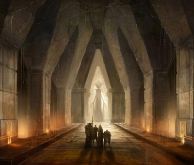
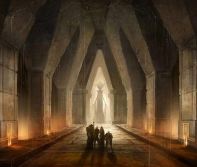

8 essential tips for beginner RPG masters
╬╬═════════❮◆❯═════════╬╬
If you are starting your adventure to become an RPG master, whether flying solo or
participating in the Nuckturp Masters Academy, you might want some quick and
essential to quickly improve your mastering skills.
When I started my journey as an RPG master I had two important moments: when I
I ventured through the dark forests of learning alone and when I met Master Vitão,
Master Marcel and other masters who helped me by illuminating my path.
Yes, being an RPG master is a constant learning process! We gain XP and move up
level with each session and each campaign we deliver, right?
01. You don't need to know the entire system by heart.
╬╬═════════❮◆❯═════════╬╬
One of the main traps for the beginning RPG master is thinking that he needs to know
EVERYTHING from the head. No, no one is that genius to know the rules in their entirety. Furthermore,
you can take advantage of the players themselves to learn from them. So, you can
create an environment of cooperation and co-creation.
A. You are the master!
If you believe that rule A or rule B makes more sense within your game, if you
If you want to invent your own rules, that’s okay! Good players are open and flexible
to the master's daydreams. The only thing you cannot corrupt at all is the
players' confidence. If you trick them or change the rules to screw them or
help them, be careful. There's a fine line between tweaking the game to serve the narrative
and adjust the game to suit you.
B. The story is more important than the rule.
What will be remembered after years of your experience as an RPG master at the table you will be at?
master? Everyone will remember the incredible master who made a story where everyone got involved,
made decisions and brought several incredible elements. That's what people remember,
It's not whether you used XYZ rules perfectly.
 

02. You don't tell the story alone.
╬╬═════════❮◆❯═════════╬╬
Firstly, it is important for you to understand that the story is narrated by you, but not told
for you, dear RPG master. This is group fun where you narrate the events, the
situations and describes the setting, environment and attitudes of the NPCs, but who dominates the protagonism
and the players decide which way to go.
Generally I start a campaign with just the prologue and some alternatives, but the
players who decide where they want to go. If they choose a totally different option
than I had imagined, everything is fine. Now it's time to trust my imagination and let the
game flow.
No one will criticize you for taking a short break to think and quickly create a place or
NPC. Know this. It's a game of friends and not a competition of judgment and criticism. Stay
calmly and narrate in your own time. This way you allow a gradual evolution of your
skills as an RPG master.
03. Start in closed places.
╬╬═════════❮◆❯═════════╬╬
I learned this tip from Master Vitão! Because I was a master who was always stressed about
the dozens of possible ways for players to stay in a tavern. I stayed
crazy about having to prepare everything around the characters and invested HOURS creating everything, to
for players to do something other than what I created.
So, after a while, I understood that the best way to start is in a closed place. He can
be a cave, a building, a corridor and so on. Therefore you use the barriers
physics of the environment to prevent players from wandering elsewhere. This way they
They start having to leave the place or something like that.
04. Excessive preparation does not work.
╬╬═════════❮◆❯═════════╬╬
One of the main mistakes I made at the beginning! Even though I always believed in my potential to
improvised, my insecurity led me to prepare dozens of local possibilities and NPCs
everywhere. So I would spend hours poring over a session, sometimes more hours than
than the session itself to create all the NPCs, environments and situations through which
players could pass.
However, 99% of the time the players did something different from what I put together. Once I arrived
creating 27 different possibilities for leaving an environment. I wanted to be prepared!
Even though I had thought of everything, they did something different!
From that day on, I decided I wasn't going to prepare a session anymore and I made the mistake in the tip.
05.
05. 100% improvisation ALSO doesn't work.
╬╬═════════❮◆❯═════════╬╬
Having decided to improvise my campaigns, I realized that improvisation alone doesn't always work. A
We get lost and don't know the way. Furthermore, we lose cohesion and transform a
potential fun in something boring and difficult to engage.
Improvisation is something magnificent and a skill that every RPG master must develop. At
At the Masters Academy, we challenge our master-students and always
We were surprised by EVERYONE’s quick ability to adapt.
WHAT IS IMPROVISATION, REALLY?
Improvisation is our ability to extract from our memories, what we call a library
mental, all the references to create something new or bring a reinterpretation of something that already
we live, watch or read. Therefore, improvising is using everything that is already in your
head in your favor.
06. Build from images.
╬╬═════════❮◆❯═════════╬╬
One of the most debatable and interesting practices is how we form our creativity
and we use visuals at RPG tables. As an RPG master, I learned that we have
two ways to search for references and illustrations on the internet to use at our tables.
Method 01 uses more internal creativity, as you will imagine what you are creating and
will look for images that match what you created. However, this is a process that can
be frustrating, because finding the right images on the internet is complicated. I had several
characters and places that I could never find an illustration of no matter how much I
I searched for hours! Worse than this is the method we use to create our Instagram. AND
too slow! However, it is ideal for those who create their own scenarios and systems.
The second method is more versatile, as you do it the other way around. You search for images in
internet you want and then create the character based on what you see. So you too
explores your creativity, but with visual keys that can facilitate your creation. In addition
This makes it much faster to create what you need.
Although the creation is not 100% yours, unless you know how to draw or are an illustrator, it is
easier to find elements and use them to your advantage. A hallway full of blood can
turn into a horror story inside a bunker. A little girl with colorful hands on
glass can become the story of a corporate rescue or the story of parents' search for
so on.
07. Fun is when EVERYONE participates.
╬╬═════════❮◆❯═════════╬╬
They say that true happiness only happens when it is shared, do you agree? And the
Fun is greater when everyone involved participates, right? That's why in another post
I wrote that the player should not be an NPC at an RPG table. But it belongs to the master, in my
vision, manage the game and the participation of all players.
That's why I have some habits that I use during the game, such as calling the
players who are quiet and just following the group. As an RPG DM, my goal is
be curious about what the characters at my table think and feel, because their actions
derive from these two things.
If we feel insecure and afraid, the character runs away or hides. If he thinks that
he's going to win and he wants something like that, he's going to act to do it. Therefore, it is extremely important to ask
tell players what their characters are feeling or thinking.
Additionally, I also call the quiet player and ask what their character is doing in this
time? I interrupt everyone until the player accepts and respects their own voice and says what
what is happening to your character at that moment. This way he “gets back in the game” and
realize that their decision or speech will not be judged or criticized – a fear that runs through some
beginners in the world of RPG.

08. Commitment starts with the RPG master.
╬╬═════════❮◆❯═════════╬╬
We always expect our players to respect time and arrive early, be
gifts and so on. But do we as RPG masters do the same? As the years pass
years, I realized that players correspond identically to the master.
If the GM delays, the players start to delay. However, if the master is punctual, they
are also. The energy and engagement of players is directly proportional to the effort and
master's engagement. It's incredible to see this synergy.